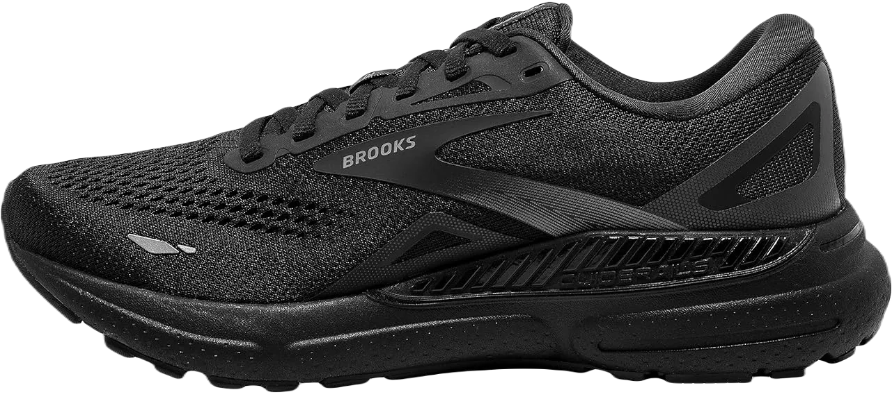

14 Best Shoes For Osteoporosis 2024
If you're looking for the best shoes to support osteoporosis, the Adidas Ultraboost 19 is an excellent option. These shoes provide superior cushioning and comfort, ensuring your foot stays well-supported whether you're running, walking, or lifting weights, such as kettlebells or dumbbells.
When selecting footwear for osteoporosis, the primary focus should be on comfort, cushioning, and stability. Below, we've reviewed top shoe brands that, after thorough research, have proven to be effective for those with osteoporosis. Let’s dive in.
-
#1
Adidas Ultraboost 19
.webp)
Are you an avid runner dealing with osteoporosis and in search of durable, high-performing running shoes that are compatible with your condition? Look no further than the Adidas Ultraboost 19, which stands out as our editor’s top choice for those with osteoporosis. This shoe offers excellent support, ensuring your feet stay cushioned throughout your runs.
Wondering if yoga is beneficial for osteoporosis? The answer is yes. As long as you have the right attire and footwear that provides ample cushioning, you can practice safely while maintaining body weight and bone mass. A secure fit with a lace-up closure is always a must.
The Ultraboost 19 features Forefoot GEL Cushioning, protecting your toes and feet from impact. Whether you're running on muddy trails or artificial grass at the park, this shoe, designed by a brand that has mastered athletic footwear, will enhance your running experience. -
#2
Mizuno Wave Horizon 3
Are you wondering if power walking is beneficial for osteoporosis, or whether walking helps improve bone density? If so, the answer is yes! The lightweight rubber sole used in the outsole of these shoes allows individuals with osteoporosis to enjoy a comfortable walking experience.
To ensure shock absorption during your walks, especially on uneven surfaces, the shoes feature a well-cushioned collar. Additionally, the waterproof upper ensures your feet stay dry, even in unpredictable weather conditions. The fabric lining helps keep your feet comfortable and moisture-free, while the natural fit is enhanced by Adidas' 3D Heel Frame technology, ensuring superior support.
On rainy days, when you might find yourself caught in the downpour, the synthetic upper works to manage excess water and sweat, keeping your feet dry as you walk. Whether heading home or to your car, these features provide the comfort and protection you need in any weather. -
#3
Nike React Element 55
.webp)
Living with osteoporosis can be challenging, especially when it comes to maintaining proper posture and foot support. That’s why choosing the right shoes is essential. The Nike React Element 55, with its elastic sole, provides both comfort and stability for those with osteoporosis, particularly if you're dealing with Piriformis Syndrome.
These shoes feature subtle sheen technology that not only offers comfort but also gives them a sleek appearance. This innovative design allows the shoes to handle stormy or foggy conditions, keeping your feet dry. For extra support, the double-density rubber outsole, combined with a PU comfort layer, ensures enhanced foot cushioning for all-day wear.
One of the few remaining Nike shoes specifically suited for osteoporosis, the React Element 55 incorporates high-quality materials like continental rubber for the upper. The lace-up closure offers a secure and snug fit, providing exceptional traction. -
#4
ASICS Women’s Gel-Kayano 5
.webp)
If you're planning to manage osteoporosis over the next six months, choosing the right shoes is essential for comfort and support. When it comes to medically recommended footwear for osteoporosis, opting for the ASICS Gel-Kayano 5 KZN will not only ensure a smooth experience but also offer shock-free cushioning with every step.
The synthetic leather used in the ASICS Gel-Kayano 5 enhances its water-resistant capabilities, making it ideal for outdoor activities, especially in wet or muddy conditions. If you're navigating through such terrains, these shoes will help keep your feet comfortable and dry. The well-cushioned design ensures that you're fully supported as you deal with osteoporosis, providing stability with each step.
Running with osteoporosis can be challenging and frustrating without the proper footwear. The ASICS Gel-Kayano 5 offers a deeply padded sole, making it one of the best options for individuals with osteoporosis. This cushioning reduces the impact on your joints, allowing you to run or walk with greater ease and comfort. -
#5
Asics Gel-Quantum
When it comes to a reliable, all-around duty shoe, the Gel-Quantum is exactly what you should be seeking. The upper construction is highly durable, combining both mesh and high-quality synthetic materials to create a breathable yet sturdy shoe. Best Shoes For Osteoporosis The foot cushioning technology includes both forefoot and rearfoot gel inserts, providing excellent support.
The inclusion of quality Exoskeleton heel counter technology enhances foot comfort and stability while still allowing for flexibility and activity in various weather conditions. This innovative feature helps to keep your foot secure while moving, providing both support and adaptability. The shoe is designed to handle different environments, offering dependable performance regardless of the climate.
A high-quality Ortholite X-40 sock liner is also incorporated, responsible for superior breathability and cushioning. The well-padded sock liner ensures that your feet stay comfortable, even during prolonged periods of wear. This shoe not only supports your foot but also promotes air circulation to keep your feet cool and dry. -
#6
New Balance
.webp)
New Balance shoes are highly recommended for individuals experiencing knee pain. According to Suzanne Davidson, a foot specialist advised her to wear New Balance shoes with a built-in rollbar, specifically in the 800 series.
The New Balance 813 walking shoe is designed with motion control technology, providing excellent support and cushioning. It ensures stability for those dealing with knee issues, helping to reduce strain on the joints. The shoe's structure is particularly beneficial for individuals who require a stable and well-cushioned base.
Featuring durable leather uppers, the New Balance 813 also offers added comfort and protection. The leather construction of the upper part of the shoe ensures a snug fit while maintaining breathability and long-lasting wear. For those dealing with knee pain, these shoes are an excellent choice for both support and comfort during walking. -
#7
Creeks
It’s not just doctors who rely on Brooks shoes—Healthline readers do too. Best Shoes for Knee Pain After undergoing two knee replacements, reader Lynnea Christensen shared that her doctor recommended Brooks Nurses Shoes, specifically the Adrenaline or Glycerin models. According to Lynnea, "They may be a bit pricey, but the support is incredible, and the comfort is outstanding!"
The Brooks Glycerin model excels in distributing pressure evenly from heel to forefoot, providing superior cushioning throughout the stride. This ensures a smoother walking experience and enhanced comfort, especially for those recovering from knee issues.
On the other hand, the Brooks Adrenaline features an extended diagonal rollbar that adds extra stability, making it an ideal choice for individuals needing added support. Both models are known for their exceptional stability and comfort, making them highly recommended for those dealing with knee pain or recovering from knee surgeries. -
#8
Asics GEL
.webp)
Runners and walkers dealing with knee pain often recommend shoes from the Asics GEL-Equipped Collection, such as the GEL-Quickwalk, GEL-Foundation Walker 3, and GEL-Nimbus. Originally launched in the 1980s, this collection has since expanded to offer shoes for various sports, including tennis and volleyball, with a focus on providing comfort and support for those with joint pain.
Previously known as Orthaheel, Vionics with Orthaheel technology offer a cost-effective alternative to custom orthotics. According to reader Diane Grasely, “If you don’t have prescription orthotics, they’re the best option.” She even mentions being able to comfortably walk her dog while wearing their flip-flops, thanks to the built-in arch support.
Both Asics and Vionics are popular choices for those in need of supportive footwear, ensuring comfort and stability whether you're walking, running, or simply going about your daily activities. -
#9
Skechers
.webp)
Skechers are highly regarded for their ability to flex and twist, promoting a more natural stride while walking. This flexibility makes them a go-to choice for individuals with knee pain, as the shoes adapt to the foot’s movement, providing comfort and ease of mobility.
The Skechers GOwalk series, in particular, is a favorite among those dealing with knee issues, including reader Penny Letchford. Known for its lightweight design, this slip-on shoe offers both practicality and support, allowing for easy wear and removal.
With a spacious forefoot, an odor-resistant liner, and features that prevent slippage, the Skechers GOwalk is a solid option for those seeking relief from knee discomfort while enjoying comfort throughout the day. -
#10
Panther
Puma is not only known for its stylish designs but also for offering lightweight and flexible sneakers and running shoes. A study published in Arthritis Care and Research examined the H-Street model and found that flat, flexible footwear significantly reduces the load on knee joints compared to more rigid, supportive shoes with stiffer soles.
When wearing flip-flops, flat walking shoes, or walking barefoot, the stress on knee joints was found to be 15 percent lower.
Although the H-Street model has been discontinued, the 76 Runner provides a similar experience and is available for both men and women. This makes it a great alternative for those seeking comfortable footwear that supports knee health. -
#11
Gravity Defyer
Gravity Defyer, an online retailer, offers a variety of casual and dress shoes for both men and women, as well as orthotic insoles.
Reader Dottie Brand Burns is a loyal customer of the brand and appreciates their diverse selection.
She owns several pairs, including boots, athletic shoes, and casual footwear, highlighting her trust in the comfort and quality of Gravity Defyer products. -
#12
Nike Air
.webp)
Reader Jean Compton is among many individuals whose doctors have recommended Nike Air shoes.
These footwear options provide additional cushioning, making them ideal for various activities.
Additionally, Nike Air shoes come in an impressive range of styles and colors, catering to both runners and those engaged in other exercises. -
#13
Merrell
.webp)
Merrell provides a variety of athletic and casual footwear options, including shoes, boots, clogs, and sandals.
Reader Deanna Daisher Borton recommends their shoes, while reader Lisa Bassoff Obermeier prefers their clogs.
For those seeking a flexible and minimalist design, the Merrell Bareform line features barefoot running shoes. -
#13
Clarks
.webp)
Clarks, renowned as the creator of the world's first comfort shoe back in the 1960s, continues to be a favorite among individuals dealing with knee issues.
ff The Wallabee is the brand's original and most popular model, showcasing their commitment to comfort and style.
In addition to the Wallabee, Clarks also provides comfort-focused shoes in athletic styles specifically designed for walkers and runners.